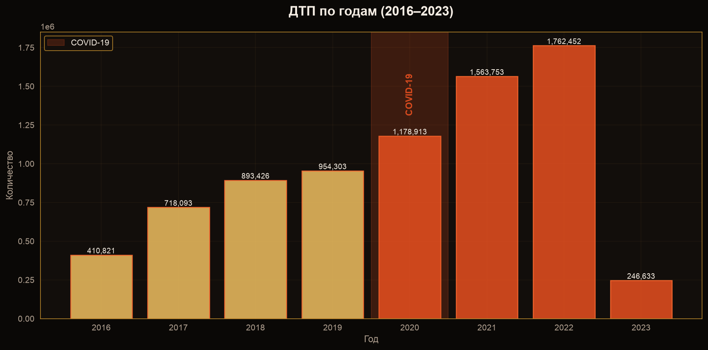
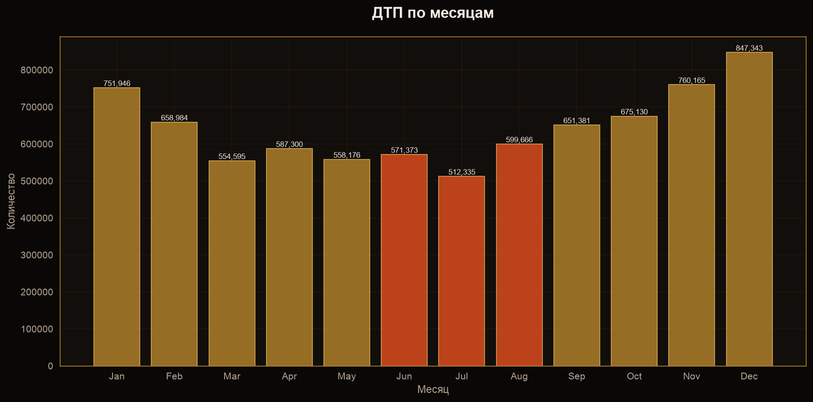
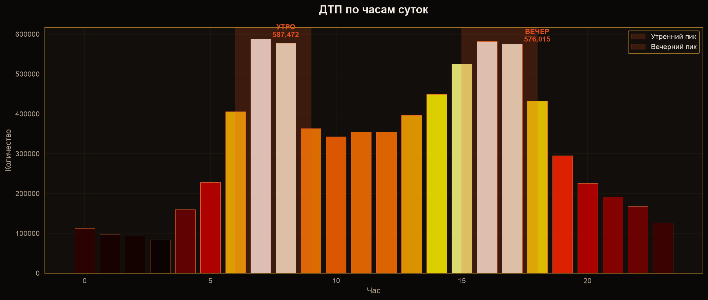
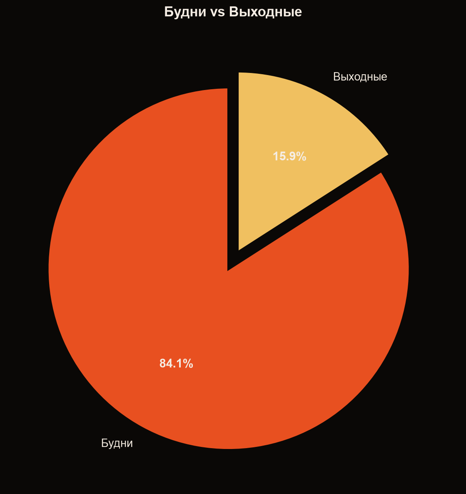
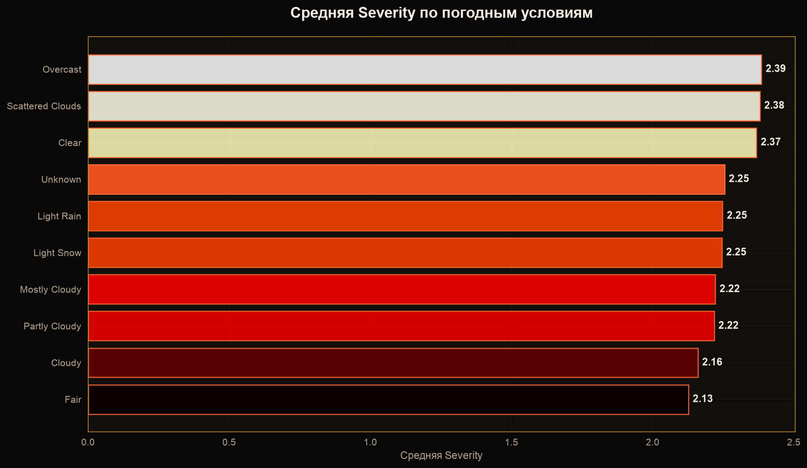
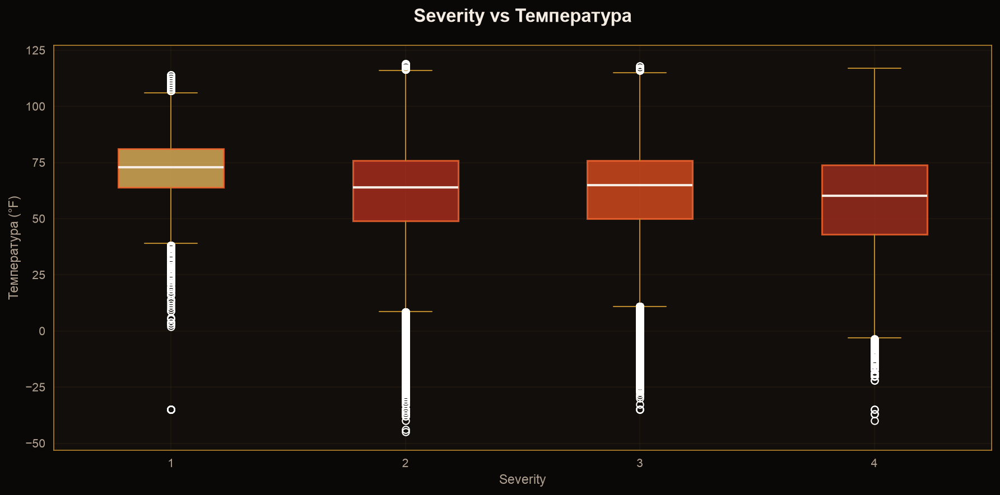
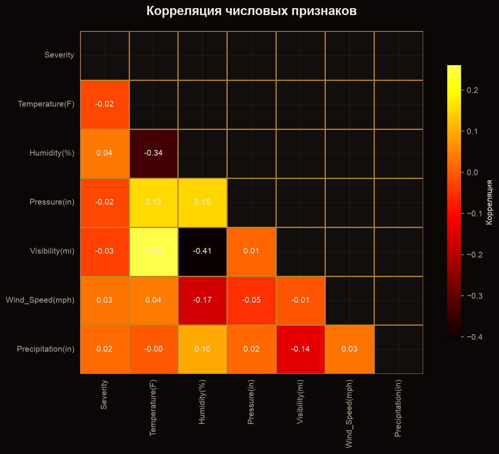

Анализ факторов тяжести дорожно-транспортных происшествий
Выявить ключевые условия, при которых тяжесть ДТП (Severity) достигает максимальных значений, и определить региональные и временные паттерны аварийности.
Дубликаты строк отсутствуют (0%).
Динамика: рост с 2016 до 2020, спад в 2020 (COVID-19), пик в 2022.

Пик: летние месяцы (июнь–август). Спад: февраль–март.



| Штат | Средняя Severity |
|---|---|
| GA | 2.51 |
| WI | 2.47 |
| RI | 2.46 |
| KY | 2.45 |
| CO | 2.44 |
| Уровень | Доля |
|---|---|
| 1 | 0.1% |
| 2 | 58.3% |
| 3 | 37.8% |
| 4 | 3.8% |

Разброс температур по уровням Severity.

| Признак | Корреляция с Severity |
|---|---|
| Humidity(%) | 0.04 |
| Wind_Speed(mph) | 0.03 |
| Precipitation(in) | 0.02 |
| Temperature(F) | -0.00 |
| Visibility(mi) | -0.01 |
Вывод: корреляции крайне слабы — тяжесть ДТП не определяется изолированными погодными факторами.

Датасет мощный, но с пробелами. Сила — в объеме. Слабость — в погодных данных и отсутствии критических факторов.